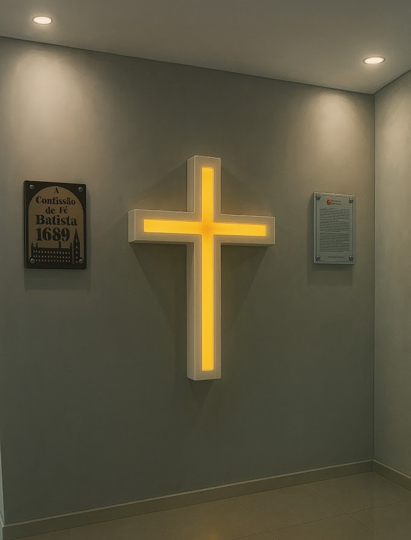

Seja Bem-vindo
Uma igreja comprometida com a fidelidade às Escrituras, a reverência no culto e a proclamação do Evangelho da graça na cidade de Russas.
Fale ConoscoSobre Nós
Somos uma comunidade de fé local fundamentada nos princípios da Reforma Protestante. Buscamos glorificar a Deus por meio de cultos solenes e reverentes, da pregação expositiva das Escrituras, do cultivo da comunhão fraterna e do testemunho cristão na sociedade.
No que Cremos (CFB 1689)
Nossa Programação
Domingo
O Dia do SenhorQuarta-Feira
Sábado
Encontros MensaisPalavra Pastoral
Acompanhe os artigos do blog A Nutrição da Igreja.
Carregando os artigos recentes...
Oficiais da Igreja
Elivando Mesquita
PastorResponsável pela pregação expositiva, ensino das Escrituras e pastoreio do rebanho local.
George Oliveira
PresbíteroAtua no governo da igreja, ensino da Palavra e auxílio no cuidado espiritual das famílias.
Leandro Cleiton
DiáconoServidor dedicado às necessidades materiais da comunidade e à ordem na casa do Senhor.
Localização
Endereço
R. Vasco da Gama, S/N
Tabuleiro do Catavento
Russas – Ceará
Venha cultuar conosco e conhecer nossa comunidade.